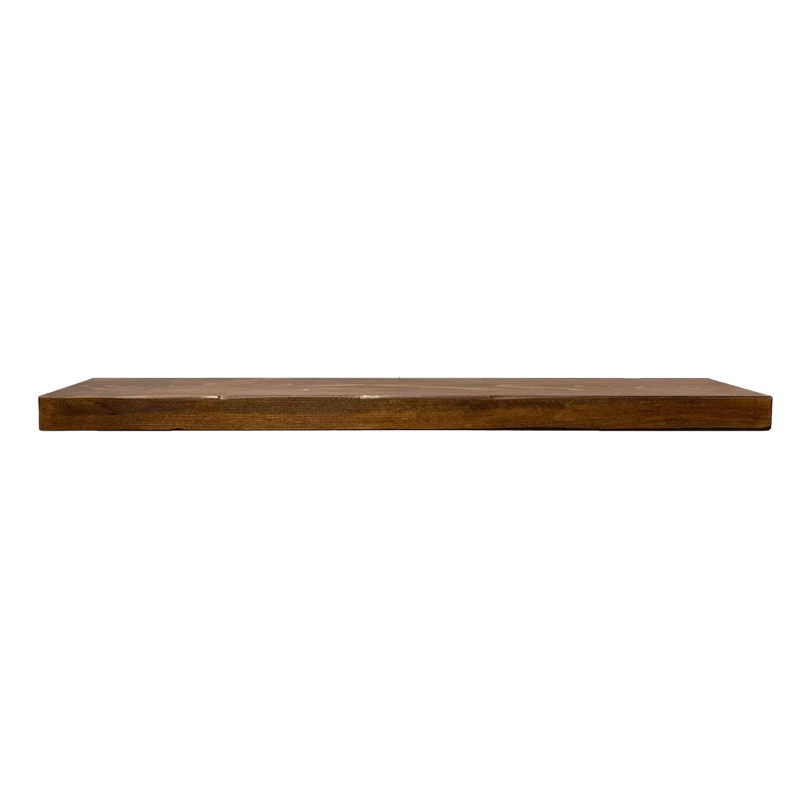
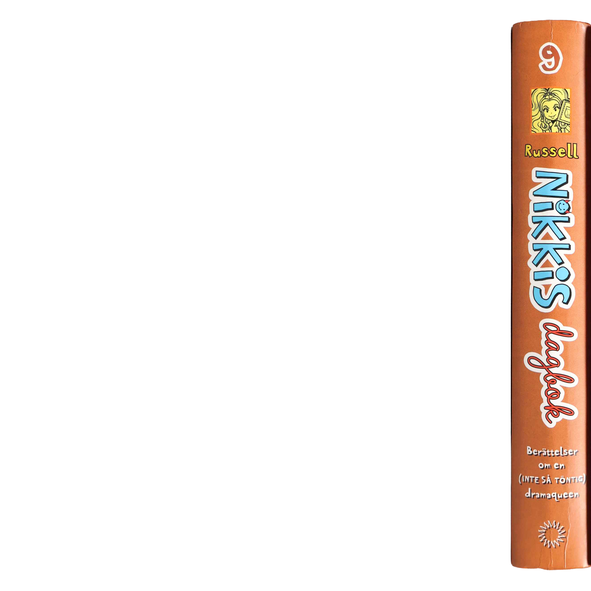
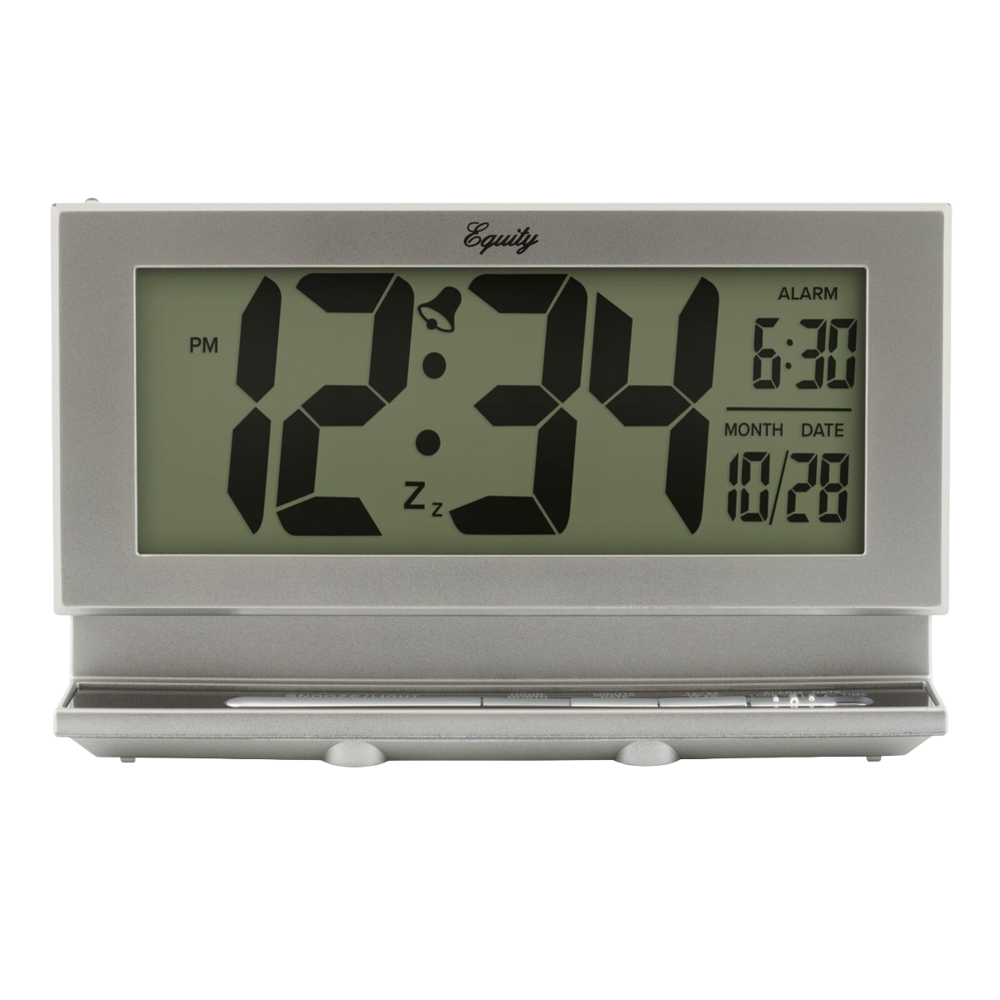
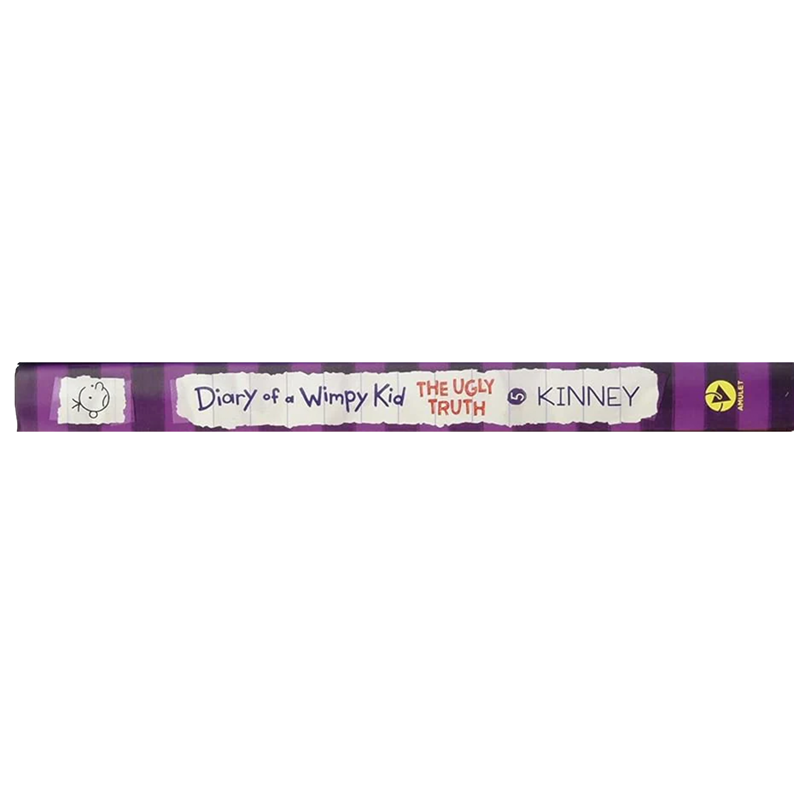
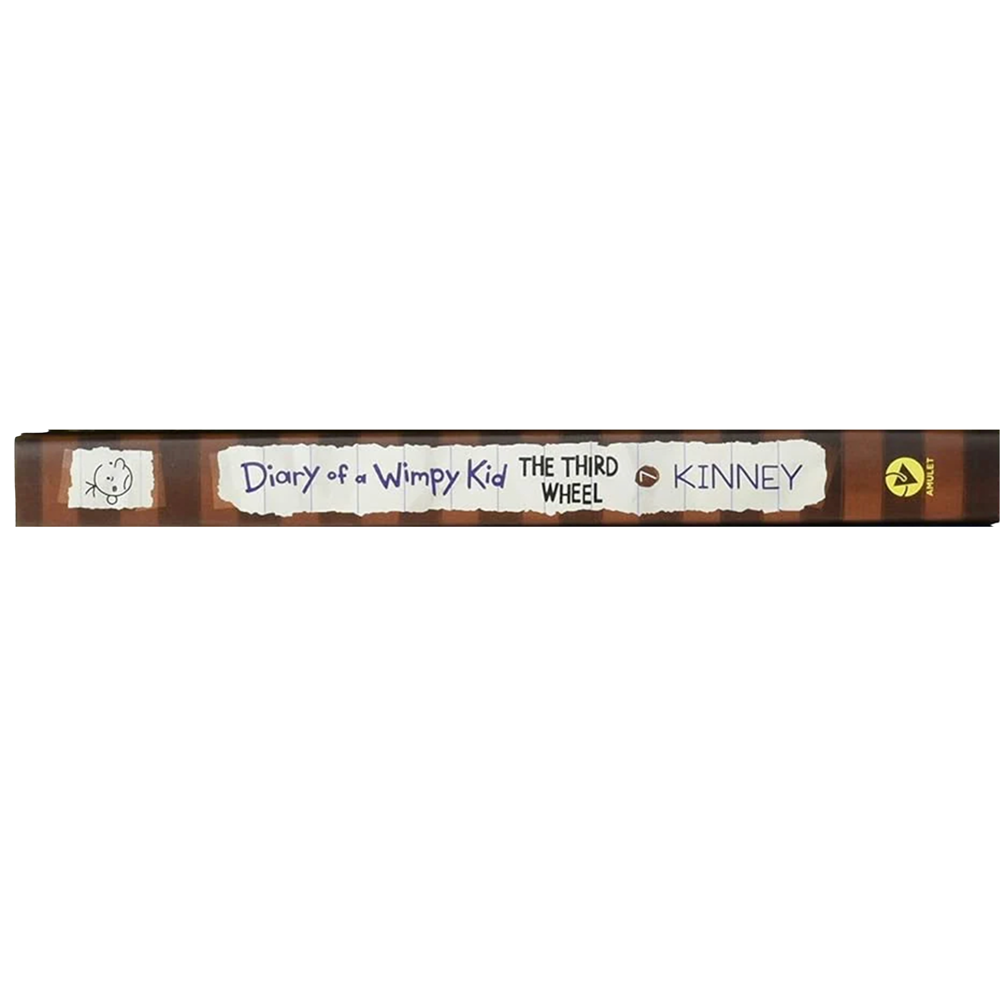
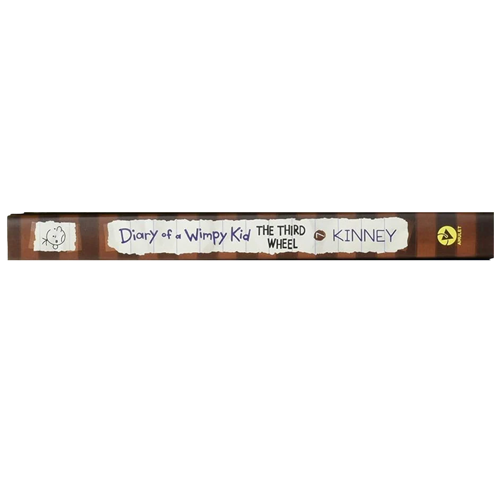

When I first got into reading as a child I picked up the "Diary of a Wimpy Kid" series and naturally I was hooked. The "Diary series" genre then quickly became a favorite of mine so I also ended up loving the "Nikkis Dagbok" books too! While I can't remember exactly what inspired me to start keeping journals and filming videos, I do think these books left a huge impression on me and in retrospect I think they might have ignited my love for the act of documenting my life in some way or other.



 

 back to homepage
back to homepage